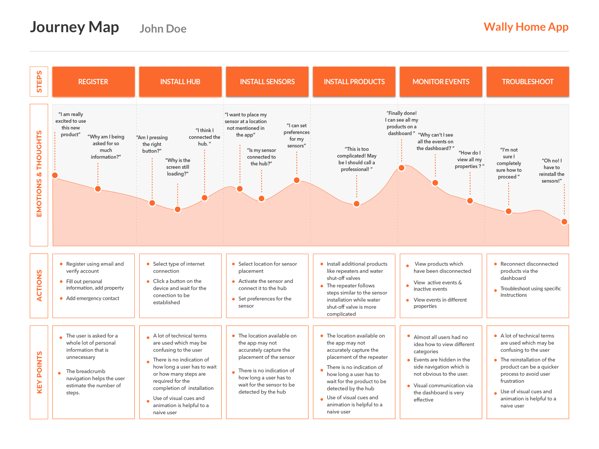
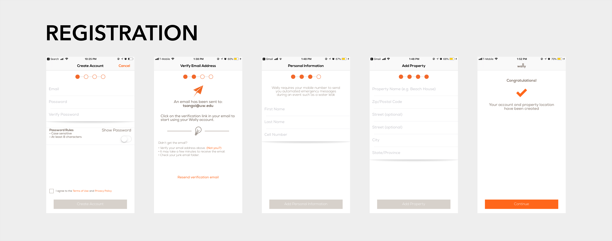
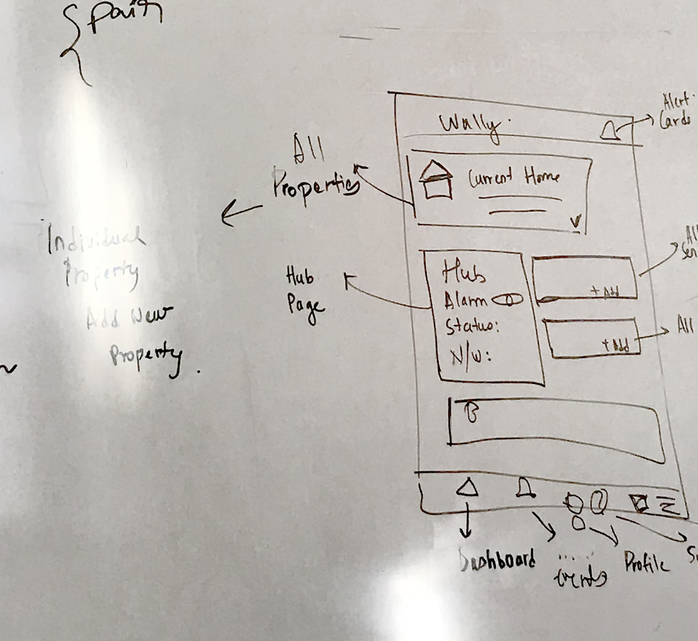

Given the short duration of this project, I did not have sufficient time to do comprehensive research.
I conducted a few think-aloud tests by asking my friends and colleagues to install the application. I then constructed a journey map based on those observations. This journey map allowed me to identify the highs and the lows of the user journey

Highs
- Breadcrumb navigation
- Use of visual cues and animation
- Dashboard overview
Lows
- No feedback while the application is loading
- Lack of indicators for current status and progress
- Use of technical terms and metaphors
- Buried content
Given the short duration, I decided to focus on three main flows which had the most number of steps. Many users had problems with these flows and they were extremely important to product installation as successive flows depended heavily on them.



I began by sketching my ideas out on a whiteboard. I also talked to engineers to understand the back end APIs that facilitated product installation.
